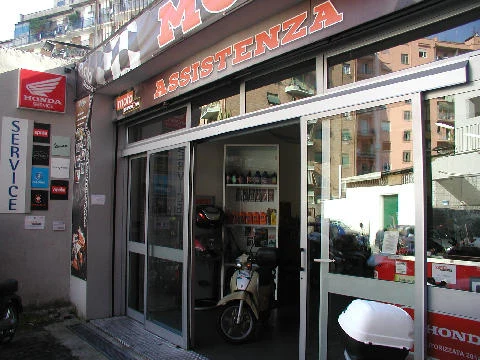
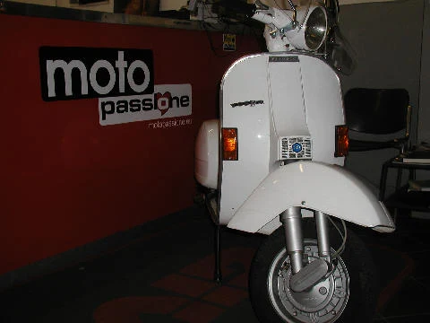
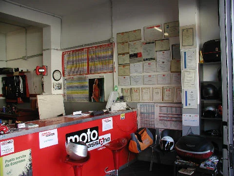

Roma, Pigneto · dal 1983
Motopassione
Officina moto in via del Pigneto 5G. Autorizzati Gruppo Piaggio e Honda, ma sotto le mani ci passa di tutto.
Cosa facciamo
Moto e scooter,
di qualunque marca
Prima si guarda la moto, poi si dice cosa serve e quanto viene. Al ritiro non ci sono sorprese.
Tagliandi e riparazioni
Manutenzione ordinaria, freni, frizione, catena, impianto elettrico, motore. Sulle moto del Gruppo Piaggio e sulle Honda siamo officina autorizzata, sulle altre marche lavoriamo da sempre lo stesso.
Revisioni
Revisione su appuntamento. Chiama e ti diciamo quando c'è posto.
Diagnosi elettronica
Strumentazione TEXA per centraline e impianti. Quando si accende una spia e nessuno capisce il perché, si parte da qui.
Gomme
Montaggio ed equilibratura. Le misure più usate le teniamo in magazzino, le altre le ordiniamo.
Pratiche CID
Riparazioni su modulo CID con la pratica seguita da noi. Siamo convenzionati Genertel.
Officina autorizzata Gruppo Piaggio (Moto Guzzi, Aprilia, Gilera) e Honda. Servizio Prime Piaggio. Assistenza e ricambi anche per Suzuki, Yamaha, Ducati e Kawasaki.
Restauro moto d'epoca
Il lavoro che
ci piace di più
Le moto d'epoca arrivano quasi sempre nello stesso stato: ferme da anni in un garage, con la benzina secca dentro al carburatore e la ruggine che ha fatto il suo lavoro. Si smonta tutto, si guarda pezzo per pezzo cosa si recupera e cosa va buttato, poi si rimette insieme come stava.
I ricambi originali si tengono, quando ci sono e quando sono ancora sani. Il resto si sostituisce con roba giusta, non con quello che capita. La verniciatura si rifà sul colore che aveva la moto, non su quello che va di moda adesso.

Vespa restaurata, a lavoro finito.



Dal 1983
Sempre qui
Enrico Vilmercati ha aperto l'officina nel 1983 e da allora non si è mai spostata. In via del Pigneto sono cambiati i negozi, i locali e mezzo quartiere, noi siamo rimasti dove eravamo.
Il lavoro ce lo porta il passaparola. Chi viene si fida, torna, e dopo un po' arriva col figlio e il primo cinquantino.
Dove siamo
Orari
Contatti
Chiamaci
Per un preventivo, un appuntamento, o solo per sapere se il pezzo c'è.
Su WhatsApp mandaci le foto della moto e il modello: ti rispondiamo con quello che c'è da fare e quanto costa.
Email info@motopassione.eu · Facebook Motopassione